My Projects
A journey through my projects: from my first steps in electronics and robotics to advanced work during my master's degree and professional collaborations outside the academic environment.
First Steps in Robotics
Projects through which I started exploring electronics, hardware design, and robotics
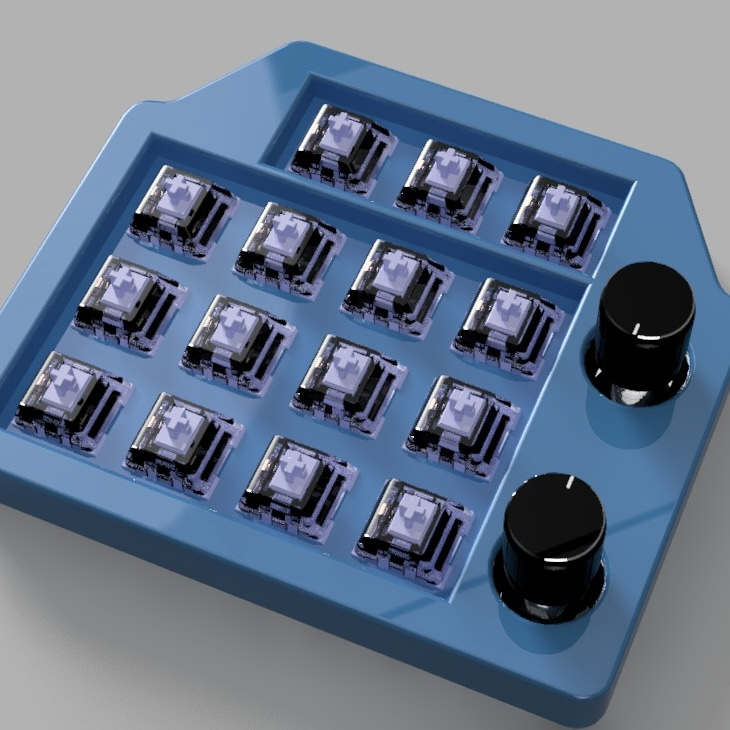
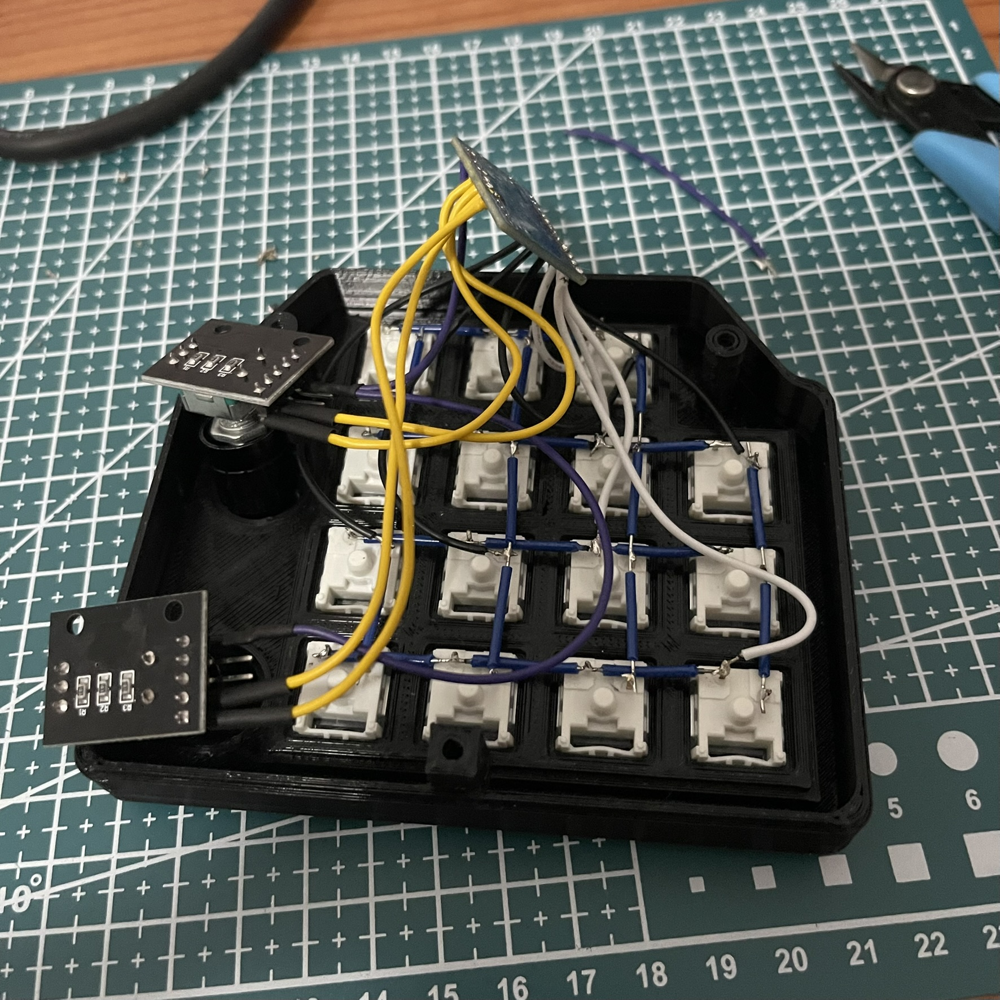
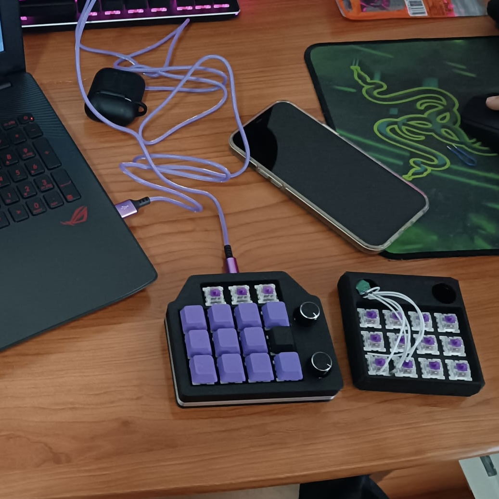
Custom Macro Pad Built from Scratch
I designed and built a macro pad entirely from scratch, covering every stage of the process: CAD modeling of the enclosure and keycaps, PCB design and soldering, and keyboard firmware programming.
This project was my first serious step into embedded hardware design, digital electronics, and microcontroller programming, laying the foundation for much more complex projects.
High-Temperature 3D Printer for Technical Materials
I designed and analyzed from scratch a 3D printer capable of working with high-melting technical materials such as PEEK and PSU, which offer mechanical and thermal properties far superior to conventional plastics. The design was developed in Autodesk Fusion and included market research, selection of heat-resistant components, and analysis of factors such as thermal expansion buckling and ease of maintenance.
The project integrates a custom motion system, a robust structure, and a heated chamber system to maintain a constant internal temperature, which is essential for correctly printing technical materials.
Robotics Master's Degree
Individual and team projects developed during the master's program, applying and expanding my knowledge in robotics
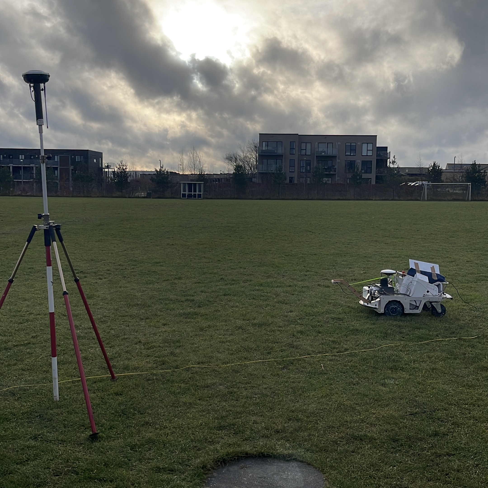
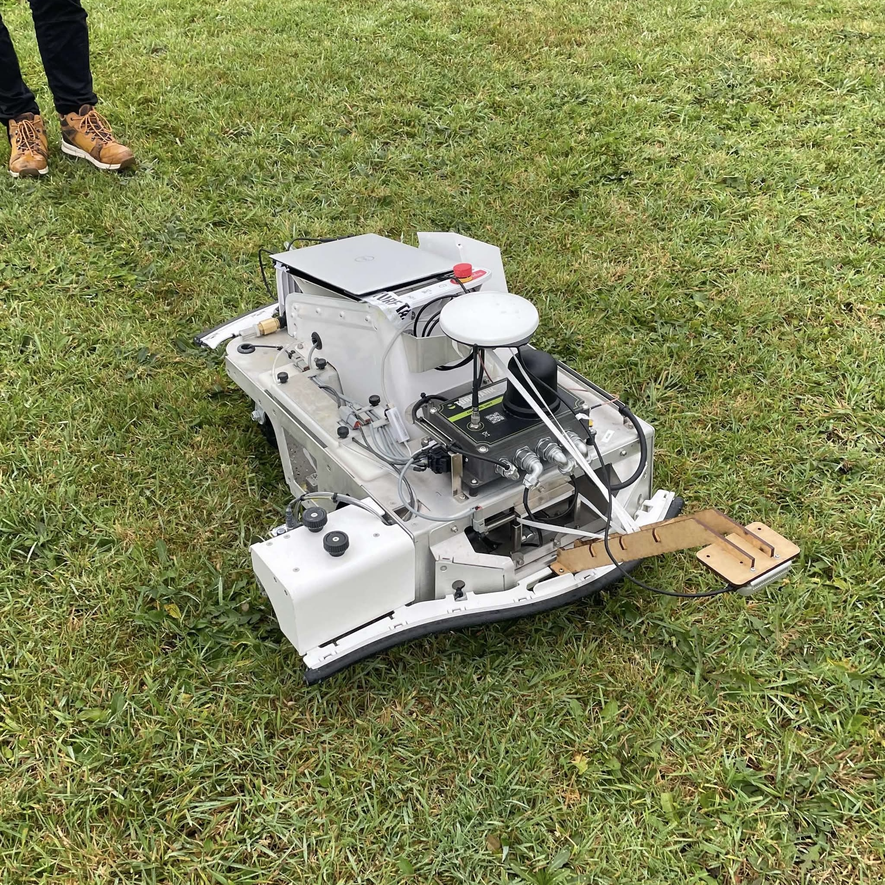
Turf Tank — Improved Localization through Visual Odometry
This project was developed with Turf Tank, a company specialized in autonomous robots for football field line marking. The robot relies on RTK-GNSS for localization, but the signal can degrade in certain environments. The goal was to implement visual odometry (VO) as a robust alternative localization method.
The solution integrates a downward-facing RGBD camera that captures images of the grass, detects features using the Shi-Tomasi algorithm, and tracks them with Lucas-Kanade. RANSAC estimates the transformation between frames, and an Extended Kalman Filter (EKF) fuses the VO output with the rest of the robot's sensors.
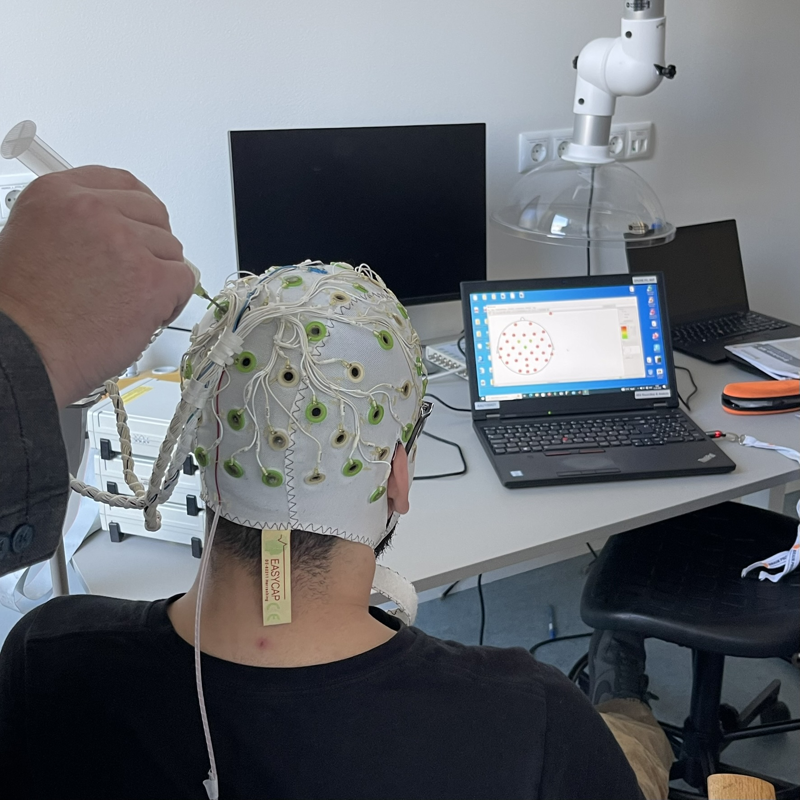
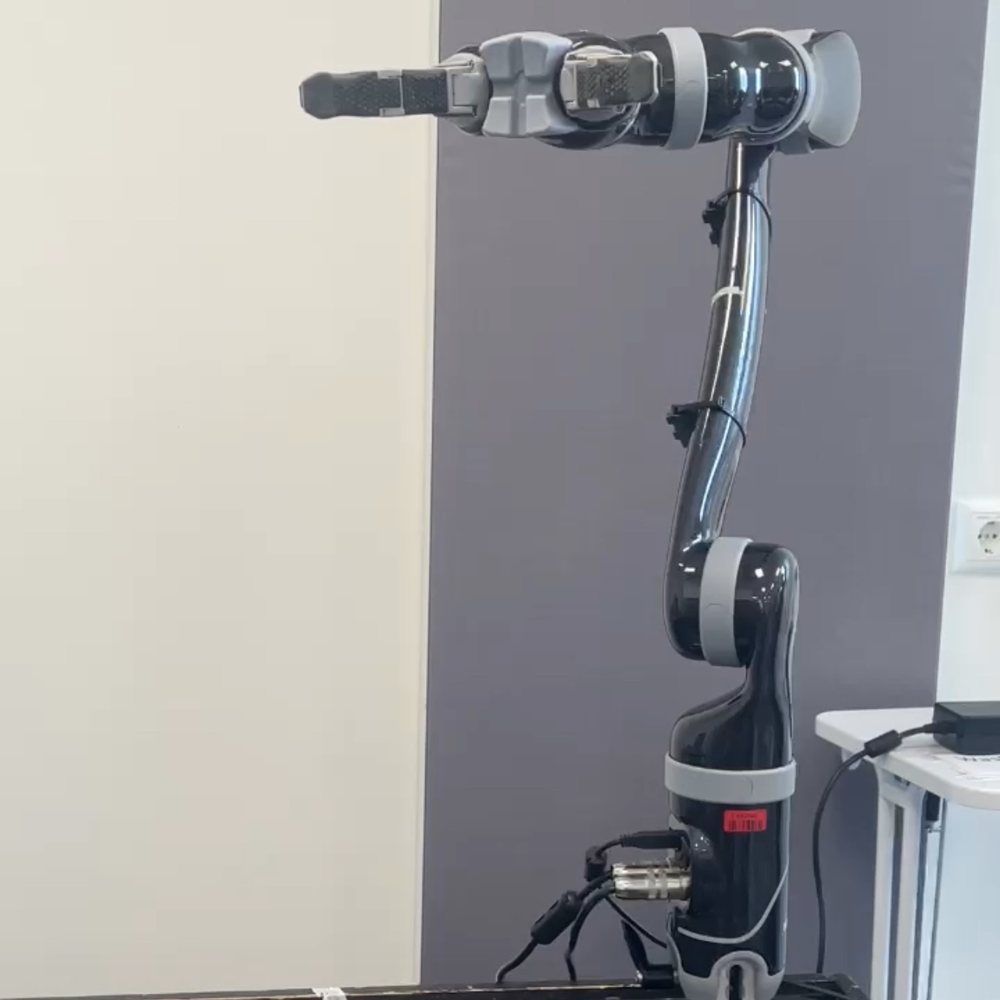
NeuroSteadyControl — BCI for Robotic Arms
A brain-computer interface (BCI) system developed in ROS to control a Kinova Gen2 robotic arm in collaborative robotics applications. The system uses EEG signals: Steady-State Visual Evoked Potentials (SSVEP) to generate motion commands, and Steady-State Auditory Evoked Potentials (SSAEP) as a validation layer to reduce unintended actions.
The project includes a custom GUI, a real-time validation framework, obstacle avoidance algorithms, and a complete pipeline for EEG signal acquisition, processing, and classification. It was specifically designed for users with physical limitations and for automated industrial environments.
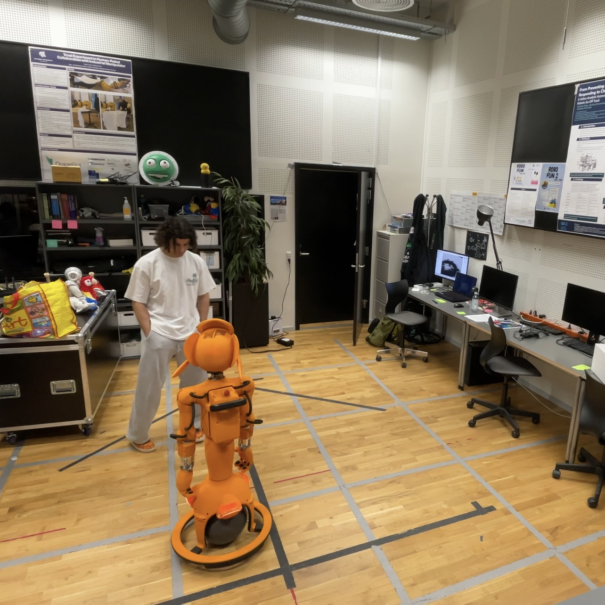
Mirokai — Group-Aware Social Navigation
An autonomous navigation system for Enchanted Tools' social robot Mirokai, designed to operate in indoor social environments. The main challenge was ensuring the robot could move safely and efficiently while respecting human interaction dynamics such as proxemics, groups of people, and personal space.
The solution implements a hybrid architecture that combines the A* algorithm for optimal global path planning with Artificial Potential Fields (APF) for reactive avoidance of dynamic obstacles in real time. The entire system was developed in ROS 2 Humble using only the robot's integrated Intel RealSense RGBD camera. It was validated both in the lab and in the university hall.
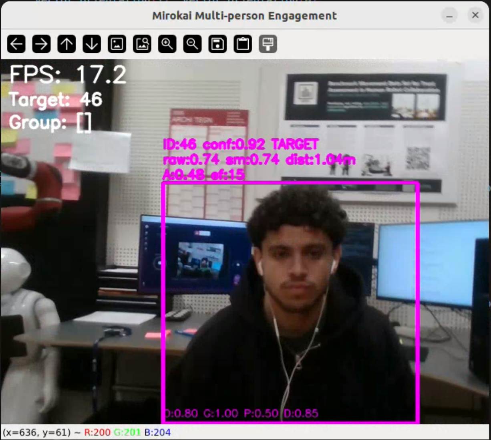
Group Engagement Detection
A robotics master's thesis focused on detecting group engagement during interaction with robots. The system analyzes visual and behavioral signals from people to determine their level of interest and intention to interact with the robot.
The goal is to give robots social initiative: the ability to start conversations autonomously with people who show an intention to interact, making them more natural and proactive in public environments.
External Projects
Professional collaborations developed outside the direct academic environment
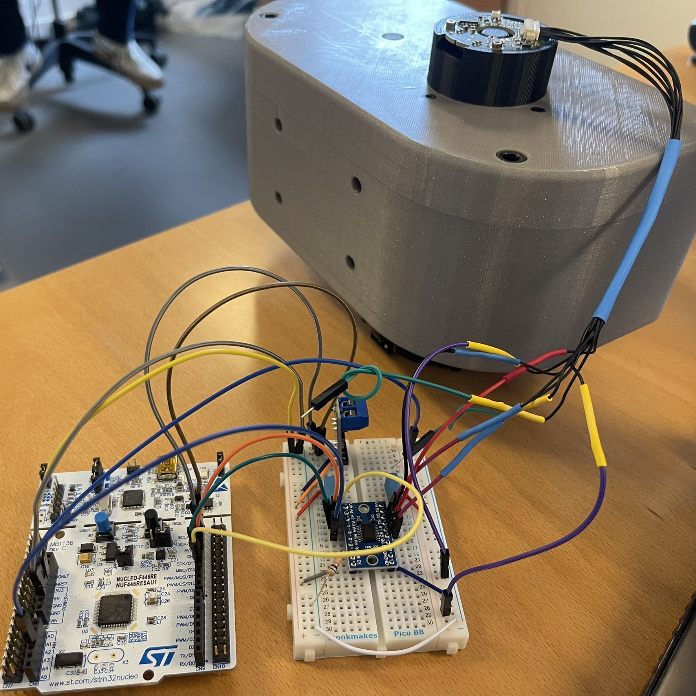
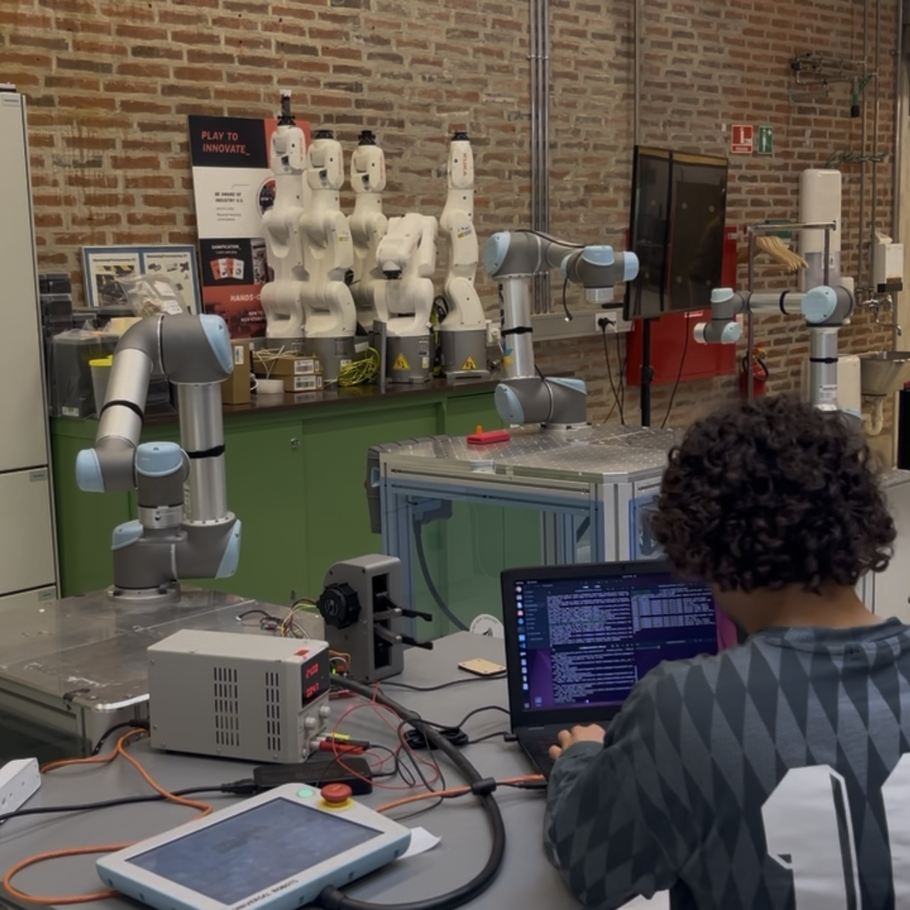
Robotics Integration as a Student Assistant
As a student assistant in the Materials and Production department, I integrated a flexible gripper, designed by the department itself, into a UR robot. The gripper control was implemented on an STM32 microcontroller programmed with CubeIDE, communicating with the robotics stack through ROS 2 and serial communication.
At the same time, I collaborated on several projects in the HRI (Human-Robot Interaction) department, contributing to research and development of human-robot interaction systems in different usage contexts.